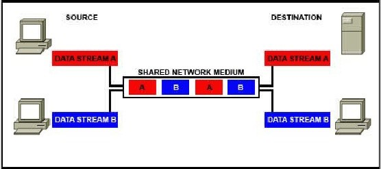
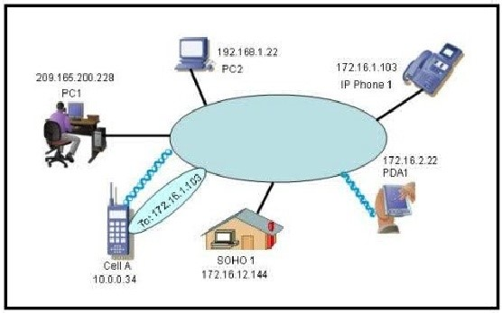
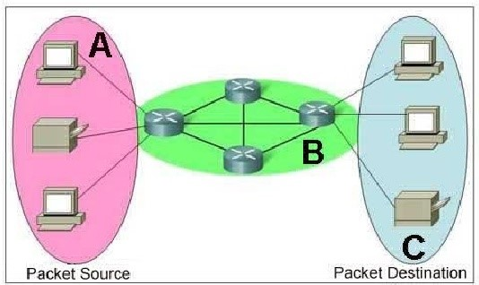
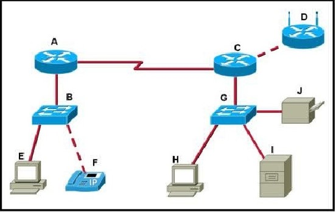
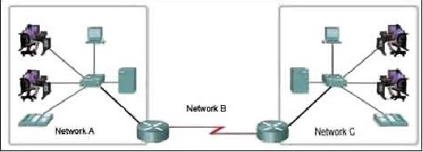
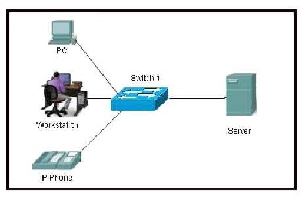

Chapter 2 – CCNA 1
01. What are the key functions of encapsulation? (Choose three.)
- allows modification of the original data before transmission;
- identifies pieces of data as part of the same communication;
- enables consistent network paths for communication;
- ensures that data pieces can be directed to the correct receiving end device;
- enables the reassembly of complete messages;
- tracks delay between end devices.
02. What is a primary function of the trailer information added by the data link layer encapsulation?
- supports error detection;
- ensures ordered arrival of data;
- provides delivery to correct destination;
- identifies the devices on the local network;
- assists intermediary devices with processing and path selection.
03. Which two layers of the OSI model have the same functions as the TCP/IP model Network Access Layer? (Choose two.)
- Network;
- Transport;
- Physical;
- Data Link;
- Session.
04. Which three statements best describe a Local Area Network (LAN)? (Choose three.)
- A LAN is usually in a single geographical area.
- The network is administered by a single organization.
- The connection between segments in the LAN is usually through a leased connection.
- The security and access control of the network are controlled by a service provider.
- A LAN provides network services and access to applications for users within a common organization.
- Each end of the network is generally connected to a Telecommunication Service Provider (TSP).
05.  Refer to the exhibit. Which networking term describes the data interleaving process represented in the graphic?
{kind=link}
- piping;
- PDU;
- streaming;
- multiplexing;
- encapsulation.
06. What is the primary purpose of Layer 4 port assignment?
- to identify devices on the local media;
- to identify the hops between source and destination;
- to identify to the intermediary devices the best path through the network;
- to identify the source and destination end devices that are communicating;
- to identify the processes or services that are communicating within the end devices.
07. What can be identified by examining the network layer header?
- the destination device on the local media;
- the destination host address;
- the bits that will be transferred over the media;
- the source application or process creating the data .
08. What is the purpose of the TCP/IP Network Access layer?
- path determination and packet switching;
- data representation, encoding, and control;
- reliability, flow control, and error detection;
- detailing the components that make up the physical link and how to access it;
- the division of segments into packets.
09. Which layer encapsulates the segment into packets?
- physical;
- data link;
- network;
- transport .
10. Select the statements that are correct concerning network protocols. (Choose three.)
- define the structure of layer specific PDU’s;
- dictate how to accomplish layer functions;
- outline the functions necessary for communications between layers;
- limit hardware compatibility;
- require layer dependent encapsulations;
- eliminate standardization among vendors.
11. What is a PDU?
- corruption of a frame during transmission;
- data reassembled at the destination;
- retransmitted packets due to lost communication;
- a layer specific encapsulation.
12.  Refer to the exhibit. “Cell A” at IP address 10.0.0.34 has established an IP session with “IP Phone 1″ at IP address 172.16.1.103. Based upon the graphic, which device type best describes the function of wireless device “Cell A?”
{kind=link}
- the destination device;
- an end device;
- an intermediate device;
- a media device.
13.  Refer to the exhibit. Which term correctly identifies the device type that is included in the area B?
{kind=link}
- Source;
- End;
- Transfer;
- Intermediary.
14. What device is considered an intermediary device?
- file server;
- IP phone;
- laptop;
- printer;
- switch .
15. Which characteristic correctly refers to end devices in a network?
- manage data flows;
- originate data flow;
- retime and retransmit data signals;
- determine pathways for data.
16.  Refer to the exhibit. Which set of devices contains only end devices?
{kind=link}
- A, C, D;
- B, E, G, H;
- C, D, G, H, I, J;
- D, E, F, H, I, J;
- E, F, H, I, J.
17. During the encapsulation process, what occurs at the data link layer?
- No address is added.
- The logical address is added.
- The physical address is added.
- The process port number is added
18.  Refer to the exhibit. Which three labels correctly identify the network types for the network segments that are shown? (Choose three.)
{kind=link}
- Network A — WAN;
- Network B — WAN;
- Network C — LAN;
- Network B — MAN;
- Network C — WAN;
- Network A — LAN.
19. What is the proper order of the layers of the OSI model from the highest layer to the lowest layer?
- physical, network, application, data link, presentation, session, transport;
- application, physical, session, transport, network, data link, presentation;
- application, presentation, physical, session, data link, transport, network;
- application, presentation, session, transport, network, data link, physical;
- presentation, data link, session, transport, network, physical, application.
20. Which statements correctly identify the role of intermediary devices in the network? (Choose three.)
- determine pathways for data;
- initiate data communications;
- retime and retransmit data signals;
- originate the flow of data;
- manage data flows;
- final termination point for data flow.
21.  Refer to the exhibit. What type of network is shown?
{kind=link}
- WA N;
- MAN;
- LAN;
- WLAN.
- In your opinion (this has no bearing on your grade), please indicate your interest in this course:
(1) Not At All Interested
(2) Slightly Interested
(3) Interested
(4) Very Interested
(5) Completely Interested
- In your opinion (this has no bearing on your grade), please indicate how enthusiastic you are about the content of this course and the things you’re learning (or have learned):
(1) Not At All Enthusiastic
(2) Slightly Enthusiastic
(3) Enthusiastic
(4) Very Enthusiastic
(5) Completely Enthusiastic
- In your opinion (this has no bearing on your grade), please rate your motivation to do well in this course:
(1) Not At All Motivated
(2) Slightly Motivated
(3) Motivated
(4) Very Motivated